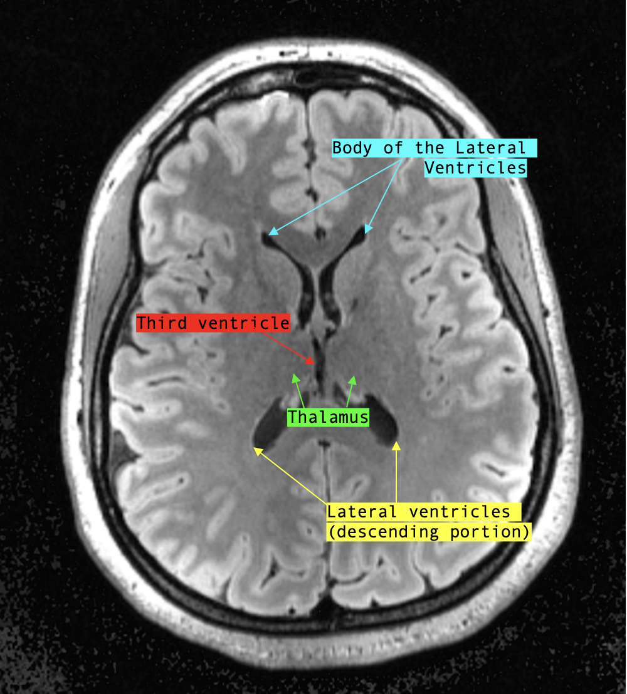

Remember what intensity fluid appears as on FLAIR?
That’s right! Fluid on is suppressed on FLAIR and therefore has low signal intensity, making the ventricular system that’s filled with CSF appear black.
Coronal view
The coronal view allows us to best appreciate the lateral and third ventricles.
In fact, the shape of the lateral ventricles and whether or not the third ventricle is visible are good indicators of the level of the section (ie. how anterior/posterior you are).
Extending into the frontal lobe, the anterior horns of the lateral ventricle initially look like a broken up “W”-shape.
At this level, the floors of the lateral ventricles appear concave, as if pushed up by the head of the caudate.

As the sections move more and more posterior, a central slit-like structure appears in the mid-line, inferior to both lateral ventricles: this is the third ventricle.

A little further posterior to the level where the third ventricle comes into view, the shape of the lateral ventricles change: the inferior poles of the ventricles become rounder, and the “W”-shape shifts into a wide “U”-shape.
Usually, the bilateral thalami come into view at this section.
Though not covered in this course, the mamillary bodies also become visible around this level.
As we move even more posterior, notice that the temporal/inferior horns of the lateral ventricles begin to appear in the bilateral temporal lobes.
!!!!(show middle-posterior coronal section with labelled lateral [body and temporal horns] and third ventricles)!!!As the sections continue to move posteriorly, the shape of the ventricles suddenly change from wide “U”-shapes to two diagonally placed chicken drumsticks.
Congratulations! You’ve reached the trigone of the lateral ventricles!
At this level (if you’ve been following on T1), you might see a hyperintense midline structure: this is the pineal gland.

The pineal gland is frequently calcified in adults, which gives it its high signal intensity; it’s very eye-catching but not pathological at all!
This is also the section where the cerebellum begins to appear.
Moving posterior again, we are seeing the posterior horns of the lateral ventricles, which are positioned almost vertical. Sometimes, there is a gaping hole between the cerebrum and the cerebellum, which is just the CSF surrounding the brain; however, within the cerebellum, at the midline, you might observe another CSF filled structure: the fourth ventricle.
Finally, in the most posterior coronal sections, only the posterior horns of the lateral ventricles are visible; here, they shift from their vertical slit appearance to a more hole-like punctate shape.!!!

Sagittal view
As previously explained, the ventricular system is a 3D structure.

We will go over important sections on sagittal view and offer reference images of how the 3D ventricles translate to 2D sections in sagittal.
Hint: the classic “C”-shape of the lateral ventricles ISN’T SEEN on any single plane.
Let’s start from the mid-sagittal view: this view allows you to appreciate the third ventricle, cerebral aqueducts and the fourth ventricle.
The third ventricle appears as a hypointense patch under the hyperintense curvature of the fornix while the fourth ventricle appears as a hypointense, triangle pointing into the middle of the cerebellum.
The cerebral aqueduct can be seen as a hypointense, narrow canal connecting the two.
Technically, the lateral ventricles are not visible in a true mid-sagittal view; instead, the hypointense structure under the corpus callosum and above the fornix corresponds to the septum pellucidum, the thin layer of tissue separating both lateral ventricles.
However, many times MRI sections don’t map exactly to midline, and therefore the superior arch of the lateral ventricles can be seen.
From lateral to midline, this is the view:
Temporal horn:
Trigone:
Just lateral to mid-sagittal:
Mid-sagittal:
Axial view
Let’s approach axial sections superior to inferior.
The lateral ventricles come into view first and appear as initially as two parallel vertical lines before curving into bilateral, continuous crescents.

As the sections move more inferior, the lateral ventricles split. Anteriorly, two thin crescents resembling bunny ears represent the body of the lateral ventricles whereas the descending portion of the ventricles is found posteriorly.
In the middle, where the ventricles used to be joined, are the bilateral thalami (large grey matter structures) sandwiching another hypointense, CSF structure: the third ventricle.
The interventricular foramen can be appreciated around this level, where the third ventricle joins up anteriorly with the “bunny-ear” shaped lateral ventricles.
A few more sections down, the posterior horns elongate like horns (true to their name) into the occipital lobe. The third ventricle gradually becomes shorter as well.
The cerebral aqueduct becomes visible at the level of the midbrain; around this level is also where the inferior horns of the lateral ventricles can be seen in the temporal lobes.
The cerebral aqueduct spills into the fourth ventricle at the level of the caudal pons; you’ll know you’ve reached the fourth ventricle when the CSF structure goes from being inside the brainstem (still cerebral aqueduct) to between the brainstem and the cerebellum.
The axial view allows the viewer to evaluate multiple points of drainage from top to bottom, which becomes relevant for evaluation of communicating vs. non-communicating hydrocephalus.
For the other sequences, follow the same same logic. However, remember that the relative intensities of different structures will change! (Link to MRI Basics)